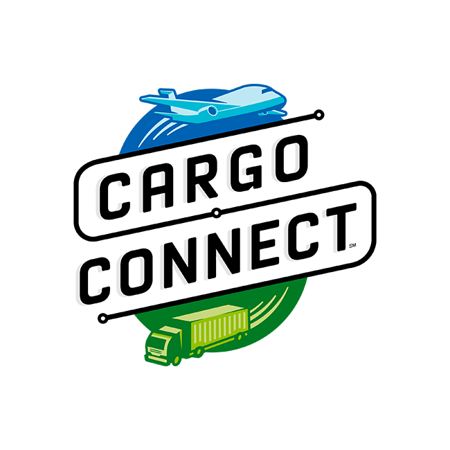
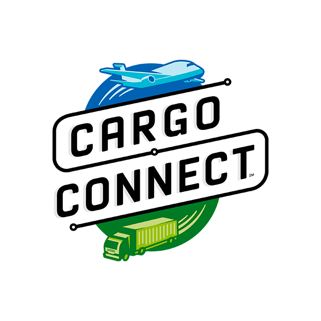

Il flusso continuo delle
merci, l’interconnessione delle
vie di trasporto, i molteplici
mezzi con cui viaggiano
beni e materie prime di qualunque tipo hanno rivoluzionato
tutti i settori economico produttivi e la vita e le abitudini di ciascuno di noi. Il mondo
della
logistica e dei
trasporti ha raggiunto degli altissimi livelli di automazione e
innovazione tecnologica. Possiamo solo immaginare questa rete formata da
magazzini
robotizzati, veicoli a guida
autonoma, gestione logistica, sistemi satellitari,
software sofisticati e nuove professionalità che consente ad ogni tipo di merce, dal
primo stadio di materie prime al prodotto finito, di
arrivare sullo scaffale del negozio o
direttamente al domicilio dell’utente finale. La complessità e l’altissimo livello di
innovazione ci portano a pensare che non ci sia più nulla da innovare o inventare.
Cominciando a riflettere e a discutere intorno alle domande e alle sfide del video
It’s
Time to Go Full Speed Ahead: 2021-2022 Robotics Season FIRST FORWARD
presented by Qualcomm, abbiamo delineato un problema ed un obiettivo. Ci siamo
concentrati sul
trasporto di animali da compagnia o piccoli animali (riflettendo e
sviluppando in particolare lo spunto posto dalla domanda
“if you could innovate to
change someone’s life, what would you deliver”).
Abbiamo quindi pensato a progettare e realizzare un dispositivo che permetta di
mantenere l’orizzontalità durante il trasporto. Abbiamo denominato il nostro
dispositivo
Cargo Stabilizator.
Il nostro progetto prevede più fasi di sviluppo:
-
Fase uno (attualmente in corso): realizzazione di un primo prototipo dotato di
sensore giroscopico, microcontrollore, led rgb. Il prototipo è costituito da un
piano in legno dotato di maniglie. Il microcontrollore prende in input le
informazioni dal giroscopio fornendo gli output relativi agli scostamenti rispetto
alla posizione orizzontale sotto forma di segnali luminosi posti in
corrispondenza dei quattro angoli del piano. In base ai segnali luminosi, un
operatore corregge la posizione del piano.
-
Fase due: sostituzione della risposta manuale con attuatori lineari e
sperimentazione su un carrello a spinta manuale.
-
Fase tre: messa a punto del dispositivo su veicolo a motore.

 
